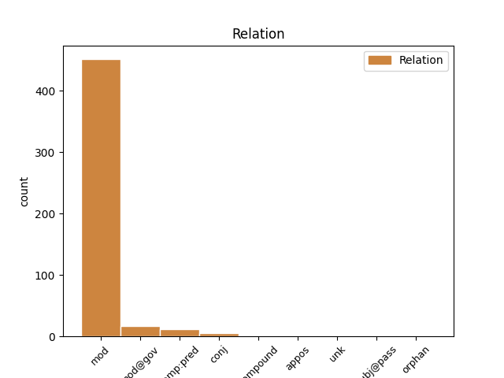
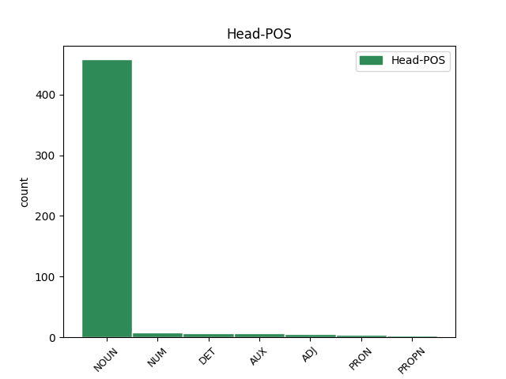
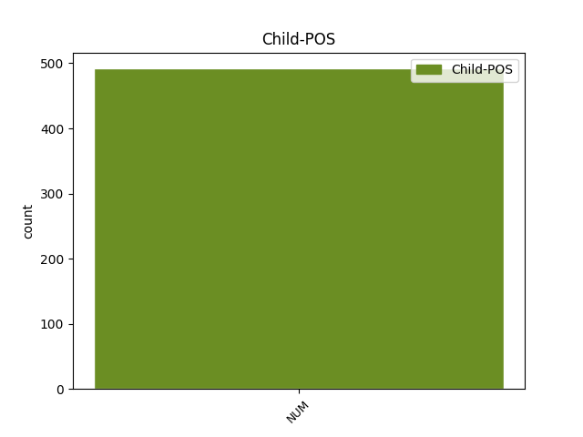

Distribution of features within this leaf



Agreement Rules sorted by frequency.
- When the dependent token is the modifer(mod) of the head token, and the head token is NOUN and the dependent token is NUM.
1 Když _ _ _ _ 0 _ _ _
2 oslava _ _ _ _ 0 _ _ _
3 skončila _ _ _ _ 0 _ _ _
4 a _ _ _ _ 0 _ _ _
5 s _ _ _ _ 0 _ _ _
6 nadcházejícím _ _ _ _ 0 _ _ _
7 víkendem _ _ _ _ 0 _ _ _
8 se _ _ _ _ 0 _ _ _
9 budova _ _ _ _ 0 _ _ _
10 vyprázdnila _ _ _ _ 0 _ _ _
11 , _ _ _ _ 0 _ _ _
12 vyndal _ _ _ _ 0 _ _ _
13 otec _ _ _ _ 0 _ _ _
14 ze _ _ _ _ 0 _ _ _
15 svého _ _ _ _ 0 _ _ _
16 svazku _ _ _ _ 0 _ _ _
17 jeden jeden NUM ClIS4---------- Animacy=Inan|Case=Acc|Gender=Masc|Number=Sing|NumForm=Word|NumType=Card|NumValue=1,2,3 19 mod _ _
18 nenápadný _ _ _ _ 0 _ _ _
19 klíček klíček NOUN NNIS4-----A---- Animacy=Inan|Case=Acc|Gender=Masc|Number=Sing|Polarity=Pos 0 _ _ _
20 a _ _ _ _ 0 _ _ _
21 řekl _ _ _ _ 0 _ _ _
22 : _ _ _ _ 0 _ _ _
1 Kvůli _ _ _ _ 0 _ _ _
2 jeho _ _ _ _ 0 _ _ _
3 chování _ _ _ _ 0 _ _ _
4 náš _ _ _ _ 0 _ _ _
5 Pán _ _ _ _ 0 _ _ _
6 ale _ _ _ _ 0 _ _ _
7 rozhodl _ _ _ _ 0 _ _ _
8 snížit _ _ _ _ 0 _ _ _
9 nález _ _ _ _ 0 _ _ _
10 o _ _ _ _ 0 _ _ _
11 devět _ _ _ _ 0 _ _ _
12 set sto NUM ClIP2---------- Animacy=Inan|Case=Gen|Gender=Masc|Number=Plur|NumForm=Word|NumType=Card|NumValue=1,2,3 13 mod@gov _ _
13 dinárů dinár NOUN NNIP2-----A---- Animacy=Inan|Case=Gen|Gender=Masc|Number=Plur|Polarity=Pos 0 _ _ _
14 . _ _ _ _ 0 _ _ _
15 " _ _ _ _ 0 _ _ _
1 Všichni všechen DET PLMP1---------- Animacy=Anim|Case=Nom|Gender=Masc|Number=Plur|PronType=Tot 0 _ _ _
2 tři tři NUM ClMP1---------- Animacy=Anim|Case=Nom|Gender=Masc|Number=Plur|NumForm=Word|NumType=Card|NumValue=1,2,3 1 mod _ _
3 se _ _ _ _ 0 _ _ _
4 postupně _ _ _ _ 0 _ _ _
5 obraceli _ _ _ _ 0 _ _ _
6 k _ _ _ _ 0 _ _ _
7 novému _ _ _ _ 0 _ _ _
8 společníkovi _ _ _ _ 0 _ _ _
9 , _ _ _ _ 0 _ _ _
10 jako _ _ _ _ 0 _ _ _
11 by _ _ _ _ 0 _ _ _
12 ho _ _ _ _ 0 _ _ _
13 brali _ _ _ _ 0 _ _ _
14 za _ _ _ _ 0 _ _ _
15 rozhodčího _ _ _ _ 0 _ _ _
16 , _ _ _ _ 0 _ _ _
17 co _ _ _ _ 0 _ _ _
18 na _ _ _ _ 0 _ _ _
19 to _ _ _ _ 0 _ _ _
20 řekne _ _ _ _ 0 _ _ _
21 , _ _ _ _ 0 _ _ _
22 ke _ _ _ _ 0 _ _ _
23 komu _ _ _ _ 0 _ _ _
24 se _ _ _ _ 0 _ _ _
25 přidá _ _ _ _ 0 _ _ _
26 . _ _ _ _ 0 _ _ _
1 Bylo být AUX VpNS----R-AA--- Gender=Neut|Number=Sing|Polarity=Pos|Tense=Past|VerbForm=Part|Voice=Act 0 _ _ _
2 mu _ _ _ _ 0 _ _ _
3 jedno jedno NUM ClNS1---------- Case=Nom|Gender=Neut|Number=Sing|NumForm=Word|NumType=Card|NumValue=1,2,3 1 comp:pred _ SpaceAfter=No
4 , _ _ _ _ 0 _ _ _
5 co _ _ _ _ 0 _ _ _
6 může _ _ _ _ 0 _ _ _
7 nastat _ _ _ _ 0 _ _ _
8 , _ _ _ _ 0 _ _ _
9 hlavní _ _ _ _ 0 _ _ _
10 věc _ _ _ _ 0 _ _ _
11 , _ _ _ _ 0 _ _ _
12 že _ _ _ _ 0 _ _ _
13 měl _ _ _ _ 0 _ _ _
14 na _ _ _ _ 0 _ _ _
15 pivo _ _ _ _ 0 _ _ _
16 . _ _ _ _ 0 _ _ _
1 Veselé _ _ _ _ 0 _ _ _
2 slavnosti slavnost NOUN NNFP1-----A---- Case=Nom|Gender=Fem|Number=Plur|Polarity=Pos 0 _ _ _
3 , _ _ _ _ 0 _ _ _
4 nádherné _ _ _ _ 0 _ _ _
5 koncerty _ _ _ _ 0 _ _ _
6 , _ _ _ _ 0 _ _ _
7 hlučné _ _ _ _ 0 _ _ _
8 plesy _ _ _ _ 0 _ _ _
9 a _ _ _ _ 0 _ _ _
10 grandiózní _ _ _ _ 0 _ _ _
11 hostiny _ _ _ _ 0 _ _ _
12 střídaly _ _ _ _ 0 _ _ _
13 jedna jeden NUM ClFS1---------- Case=Nom|Gender=Fem|Number=Sing|NumForm=Word|NumType=Card|NumValue=1,2,3 2 comp:pred _ _
14 druhou _ _ _ _ 0 _ _ _
15 . _ _ _ _ 0 _ _ _
1 Rozhodl _ _ _ _ 0 _ _ _
2 se _ _ _ _ 0 _ _ _
3 tedy _ _ _ _ 0 _ _ _
4 , _ _ _ _ 0 _ _ _
5 že _ _ _ _ 0 _ _ _
6 se _ _ _ _ 0 _ _ _
7 o _ _ _ _ 0 _ _ _
8 svých _ _ _ _ 0 _ _ _
9 pochybnostech _ _ _ _ 0 _ _ _
10 přesvědčí _ _ _ _ 0 _ _ _
11 , _ _ _ _ 0 _ _ _
12 a _ _ _ _ 0 _ _ _
13 poslal _ _ _ _ 0 _ _ _
14 syna _ _ _ _ 0 _ _ _
15 k _ _ _ _ 0 _ _ _
16 jednomu jeden NUM ClMS3---------- Animacy=Anim|Case=Dat|Gender=Masc|Number=Sing|NumForm=Word|NumType=Card|NumValue=1,2,3 19 mod _ _
17 nesmírně _ _ _ _ 0 _ _ _
18 bohatému _ _ _ _ 0 _ _ _
19 příbuznému příbuzný ADJ AAMS3----1A---- Animacy=Anim|Case=Dat|Degree=Pos|Gender=Masc|Number=Sing|Polarity=Pos 0 _ _ _
20 , _ _ _ _ 0 _ _ _
21 který _ _ _ _ 0 _ _ _
22 byl _ _ _ _ 0 _ _ _
23 v _ _ _ _ 0 _ _ _
24 celé _ _ _ _ 0 _ _ _
25 rodině _ _ _ _ 0 _ _ _
26 považován _ _ _ _ 0 _ _ _
27 za _ _ _ _ 0 _ _ _
28 milovníka _ _ _ _ 0 _ _ _
29 života _ _ _ _ 0 _ _ _
30 . _ _ _ _ 0 _ _ _
1 Dal _ _ _ _ 0 _ _ _
2 si _ _ _ _ 0 _ _ _
3 dvě dva NUM ClFP4---------- Case=Acc|Gender=Fem|Number=Plur|NumForm=Word|NumType=Card|NumValue=1,2,3 0 _ _ _
4 a _ _ _ _ 0 _ _ _
5 dvě dva NUM ClFP4---------- Case=Acc|Gender=Fem|Number=Plur|NumForm=Word|NumType=Card|NumValue=1,2,3 3 conj _ _
6 dohromady _ _ _ _ 0 _ _ _
7 . _ _ _ _ 0 _ _ _
1 Jedné _ _ _ _ 0 _ _ _
2 krásné _ _ _ _ 0 _ _ _
3 měsíční _ _ _ _ 0 _ _ _
4 noci _ _ _ _ 0 _ _ _
5 seděli _ _ _ _ 0 _ _ _
6 dva dva NUM ClMP1---------- Animacy=Anim|Case=Nom|Gender=Masc|Number=Plur|NumForm=Word|NumType=Card|NumValue=1,2,3 7 mod _ _
7 Japonci Japonec PROPN NNMP1-----A---- Animacy=Anim|Case=Nom|Gender=Masc|NameType=Nat|Number=Plur|Polarity=Pos 0 _ _ _
8 v _ _ _ _ 0 _ _ _
9 zahradě _ _ _ _ 0 _ _ _
10 a _ _ _ _ 0 _ _ _
11 naslouchali _ _ _ _ 0 _ _ _
12 zpěvu _ _ _ _ 0 _ _ _
13 slavíka _ _ _ _ 0 _ _ _
14 . _ _ _ _ 0 _ _ _
1 V _ _ _ _ 0 _ _ _
2 sále _ _ _ _ 0 _ _ _
3 zbyli _ _ _ _ 0 _ _ _
4 jen _ _ _ _ 0 _ _ _
5 oni on PRON PPMP1--3------- Animacy=Anim|Case=Nom|Gender=Masc|Number=Plur|Person=3|PronType=Prs 0 _ _ _
6 čtyři čtyři NUM ClMP1---------- Animacy=Anim|Case=Nom|Gender=Masc|Number=Plur|NumForm=Word|NumType=Card|NumValue=1,2,3 5 mod _ _
7 a _ _ _ _ 0 _ _ _
8 hostinský _ _ _ _ 0 _ _ _
9 . _ _ _ _ 0 _ _ _
1 A _ _ _ _ 0 _ _ _
2 zatímco _ _ _ _ 0 _ _ _
3 se _ _ _ _ 0 _ _ _
4 takhle _ _ _ _ 0 _ _ _
5 přely _ _ _ _ 0 _ _ _
6 , _ _ _ _ 0 _ _ _
7 šel _ _ _ _ 0 _ _ _
8 kolem _ _ _ _ 0 _ _ _
9 rybář _ _ _ _ 0 _ _ _
10 a _ _ _ _ 0 _ _ _
11 polapil _ _ _ _ 0 _ _ _
12 je on PRON PPFP4--3------- Case=Acc|Gender=Fem|Number=Plur|Person=3|PronType=Prs 0 _ _ _
13 obě _ _ _ _ 0 _ _ _
14 dvě dva NUM ClFP4---------- Case=Acc|Gender=Fem|Number=Plur|NumForm=Word|NumType=Card|NumValue=1,2,3 12 comp:pred _ SpaceAfter=No
15 . _ _ _ _ 0 _ _ _
16 " _ _ _ _ 0 _ _ _
1 A _ _ _ _ 0 _ _ _
2 zatímco _ _ _ _ 0 _ _ _
3 se _ _ _ _ 0 _ _ _
4 takhle _ _ _ _ 0 _ _ _
5 přely _ _ _ _ 0 _ _ _
6 , _ _ _ _ 0 _ _ _
7 šel _ _ _ _ 0 _ _ _
8 kolem _ _ _ _ 0 _ _ _
9 rybář _ _ _ _ 0 _ _ _
10 a _ _ _ _ 0 _ _ _
11 polapil _ _ _ _ 0 _ _ _
12 je _ _ _ _ 0 _ _ _
13 obě oba NUM ClFP4---------- Case=Acc|Gender=Fem|Number=Plur|NumForm=Word|NumType=Card|NumValue=1,2,3 14 compound _ _
14 dvě dva NUM ClFP4---------- Case=Acc|Gender=Fem|Number=Plur|NumForm=Word|NumType=Card|NumValue=1,2,3 0 _ _ _
15 . _ _ _ _ 0 _ _ _
16 " _ _ _ _ 0 _ _ _
1 Konečně _ _ _ _ 0 _ _ _
2 , _ _ _ _ 0 _ _ _
3 tohle _ _ _ _ 0 _ _ _
4 platilo _ _ _ _ 0 _ _ _
5 , _ _ _ _ 0 _ _ _
6 pokud _ _ _ _ 0 _ _ _
7 jsem _ _ _ _ 0 _ _ _
8 si _ _ _ _ 0 _ _ _
9 poctivě _ _ _ _ 0 _ _ _
10 prošla _ _ _ _ 0 _ _ _
11 svůj _ _ _ _ 0 _ _ _
12 život _ _ _ _ 0 _ _ _
13 , _ _ _ _ 0 _ _ _
14 i _ _ _ _ 0 _ _ _
15 na _ _ _ _ 0 _ _ _
16 dobré _ _ _ _ 0 _ _ _
17 tři tři NUM ClFP4---------- Case=Acc|Gender=Fem|Number=Plur|NumForm=Word|NumType=Card|NumValue=1,2,3 18 mod _ _
18 čtvrtiny čtvrtina NUM CyFP4---------- Case=Acc|Gender=Fem|Number=Plur|NumType=Frac 0 _ _ _
19 mých _ _ _ _ 0 _ _ _
20 trápení _ _ _ _ 0 _ _ _
21 . _ _ _ _ 0 _ _ _
1 Ne _ _ _ _ 0 _ _ _
2 , _ _ _ _ 0 _ _ _
3 obě oba NUM ClNP4---------- Case=Acc|Gender=Neut|Number=Plur|NumForm=Word|NumType=Card|NumValue=1,2,3 0 _ _ _
4 dvě dva NUM ClNP4---------- Case=Acc|Gender=Neut|Number=Plur|NumForm=Word|NumType=Card|NumValue=1,2,3 3 orphan _ SpaceAfter=No
5 ! _ _ _ _ 0 _ _ _
1 Tři tři NUM ClMP1---------- Animacy=Anim|Case=Nom|Gender=Masc|Number=Plur|NumForm=Word|NumType=Card|NumValue=1,2,3 4 subj@pass _ _
2 ze _ _ _ _ 0 _ _ _
3 čtrnácti _ _ _ _ 0 _ _ _
4 byli být AUX VpMP----R-AA--- Animacy=Anim|Gender=Masc|Number=Plur|Polarity=Pos|Tense=Past|VerbForm=Part|Voice=Act 0 _ _ _
5 odsouzeni _ _ _ _ 0 _ _ _
6 na _ _ _ _ 0 _ _ _
7 doživotí _ _ _ _ 0 _ _ _
8 . _ _ _ _ 0 _ _ _
1 Připadalo _ _ _ _ 0 _ _ _
2 mi _ _ _ _ 0 _ _ _
3 , _ _ _ _ 0 _ _ _
4 že _ _ _ _ 0 _ _ _
5 zrazuji _ _ _ _ 0 _ _ _
6 rodinnou _ _ _ _ 0 _ _ _
7 tradici _ _ _ _ 0 _ _ _
8 , _ _ _ _ 0 _ _ _
9 protože _ _ _ _ 0 _ _ _
10 můj _ _ _ _ 0 _ _ _
11 bratr _ _ _ _ 0 _ _ _
12 Pavel _ _ _ _ 0 _ _ _
13 kdysi _ _ _ _ 0 _ _ _
14 sehrál _ _ _ _ 0 _ _ _
15 partičku _ _ _ _ 0 _ _ _
16 s _ _ _ _ 0 _ _ _
17 José José PROPN NNMS7-----A---1 Animacy=Anim|Case=Ins|Gender=Masc|NameType=Giv|Number=Sing|Polarity=Pos 0 _ _ _
18 Raúlem _ _ _ _ 0 _ _ _
19 Capablancou _ _ _ _ 0 _ _ _
20 , _ _ _ _ 0 _ _ _
21 jedním jeden NUM ClMS7---------- Animacy=Anim|Case=Ins|Gender=Masc|Number=Sing|NumForm=Word|NumType=Card|NumValue=1,2,3 17 appos _ _
22 z _ _ _ _ 0 _ _ _
23 největších _ _ _ _ 0 _ _ _
24 šachových _ _ _ _ 0 _ _ _
25 mistrů _ _ _ _ 0 _ _ _
26 všech _ _ _ _ 0 _ _ _
27 dob _ _ _ _ 0 _ _ _
28 . _ _ _ _ 0 _ _ _
1 V _ _ _ _ 0 _ _ _
2 nich _ _ _ _ 0 _ _ _
3 stál _ _ _ _ 0 _ _ _
4 profesor profesor NOUN NNMS1-----A---- Animacy=Anim|Case=Nom|Gender=Masc|Number=Sing|Polarity=Pos 0 _ _ _
5 Masák _ _ _ _ 0 _ _ _
6 , _ _ _ _ 0 _ _ _
7 jeden jeden NUM ClMS1---------- Animacy=Anim|Case=Nom|Gender=Masc|Number=Sing|NumForm=Word|NumType=Card|NumValue=1,2,3 4 appos _ _
8 z _ _ _ _ 0 _ _ _
9 nových _ _ _ _ 0 _ _ _
10 kádrů _ _ _ _ 0 _ _ _
11 , _ _ _ _ 0 _ _ _
12 které _ _ _ _ 0 _ _ _
13 přišly _ _ _ _ 0 _ _ _
14 na _ _ _ _ 0 _ _ _
15 zámek _ _ _ _ 0 _ _ _
16 , _ _ _ _ 0 _ _ _
17 a _ _ _ _ 0 _ _ _
18 s _ _ _ _ 0 _ _ _
19 obvyklým _ _ _ _ 0 _ _ _
20 výrazem _ _ _ _ 0 _ _ _
21 plaza _ _ _ _ 0 _ _ _
22 na _ _ _ _ 0 _ _ _
23 mě _ _ _ _ 0 _ _ _
24 zíral _ _ _ _ 0 _ _ _
25 , _ _ _ _ 0 _ _ _
26 načež _ _ _ _ 0 _ _ _
27 se _ _ _ _ 0 _ _ _
28 otočil _ _ _ _ 0 _ _ _
29 , _ _ _ _ 0 _ _ _
30 práskl _ _ _ _ 0 _ _ _
31 za _ _ _ _ 0 _ _ _
32 sebou _ _ _ _ 0 _ _ _
33 dveřmi _ _ _ _ 0 _ _ _
34 a _ _ _ _ 0 _ _ _
35 zmizel _ _ _ _ 0 _ _ _
36 . _ _ _ _ 0 _ _ _
1 Mašínovi _ _ _ _ 0 _ _ _
2 zabili _ _ _ _ 0 _ _ _
3 další _ _ _ _ 0 _ _ _
4 dva _ _ _ _ 0 _ _ _
5 Němce _ _ _ _ 0 _ _ _
6 a _ _ _ _ 0 _ _ _
7 zase _ _ _ _ 0 _ _ _
8 unikli _ _ _ _ 0 _ _ _
9 , _ _ _ _ 0 _ _ _
10 a _ _ _ _ 0 _ _ _
11 nakonec _ _ _ _ 0 _ _ _
12 se _ _ _ _ 0 _ _ _
13 do _ _ _ _ 0 _ _ _
14 toho _ _ _ _ 0 _ _ _
15 Berlína _ _ _ _ 0 _ _ _
16 oba _ _ _ _ 0 _ _ _
17 bráchové brácha NOUN NNMP1-----A---- Animacy=Anim|Case=Nom|Gender=Masc|Number=Plur|Polarity=Pos 0 _ _ _
18 a _ _ _ _ 0 _ _ _
19 jeden jeden NUM ClMS1---------- Animacy=Anim|Case=Nom|Gender=Masc|Number=Sing|NumForm=Word|NumType=Card|NumValue=1,2,3 17 conj _ _
20 z _ _ _ _ 0 _ _ _
21 jejich _ _ _ _ 0 _ _ _
22 tří _ _ _ _ 0 _ _ _
23 kamarádů _ _ _ _ 0 _ _ _
24 přece _ _ _ _ 0 _ _ _
25 jen _ _ _ _ 0 _ _ _
26 dostali _ _ _ _ 0 _ _ _
27 . _ _ _ _ 0 _ _ _
1 Dvě _ _ _ _ 0 _ _ _
2 přítelkyně _ _ _ _ 0 _ _ _
3 , _ _ _ _ 0 _ _ _
4 obě oba NUM ClFP1---------- Case=Nom|Gender=Fem|Number=Plur|NumForm=Word|NumType=Card|NumValue=1,2,3 12 unk _ _
5 už _ _ _ _ 0 _ _ _
6 trochu _ _ _ _ 0 _ _ _
7 v _ _ _ _ 0 _ _ _
8 letech _ _ _ _ 0 _ _ _
9 , _ _ _ _ 0 _ _ _
10 byly _ _ _ _ 0 _ _ _
11 natolik _ _ _ _ 0 _ _ _
12 ješitné ješitný ADJ AAFP1----1A---- Case=Nom|Degree=Pos|Gender=Fem|Number=Plur|Polarity=Pos 0 _ _ _
13 , _ _ _ _ 0 _ _ _
14 že _ _ _ _ 0 _ _ _
15 jedna _ _ _ _ 0 _ _ _
16 před _ _ _ _ 0 _ _ _
17 druhou _ _ _ _ 0 _ _ _
18 tajila _ _ _ _ 0 _ _ _
19 svůj _ _ _ _ 0 _ _ _
20 zhoršující _ _ _ _ 0 _ _ _
21 se _ _ _ _ 0 _ _ _
22 zrak _ _ _ _ 0 _ _ _
23 . _ _ _ _ 0 _ _ _
Disagree Examples:
1 Byl _ _ _ _ 0 _ _ _
2 to _ _ _ _ 0 _ _ _
3 můj _ _ _ _ 0 _ _ _
4 milenec _ _ _ _ 0 _ _ _
5 číslo číslo NOUN NNNS1-----A---- Case=Nom|Gender=Neut|Number=Sing|Polarity=Pos 0 _ _ _
6 jedna jeden NUM ClFS1---------- Case=Nom|Gender=Fem|Number=Sing|NumForm=Word|NumType=Card|NumValue=1,2,3 5 mod _ _
7 a _ _ _ _ 0 _ _ _
8 nikdy _ _ _ _ 0 _ _ _
9 na _ _ _ _ 0 _ _ _
10 něj _ _ _ _ 0 _ _ _
11 nebyl _ _ _ _ 0 _ _ _
12 spoleh _ _ _ _ 0 _ _ _
13 . _ _ _ _ 0 _ _ _
1 Nikdy _ _ _ _ 0 _ _ _
2 bohatě _ _ _ _ 0 _ _ _
3 nesnídal _ _ _ _ 0 _ _ _
4 , _ _ _ _ 0 _ _ _
5 stačilo _ _ _ _ 0 _ _ _
6 mu _ _ _ _ 0 _ _ _
7 napít _ _ _ _ 0 _ _ _
8 se _ _ _ _ 0 _ _ _
9 voňavého _ _ _ _ 0 _ _ _
10 čaje _ _ _ _ 0 _ _ _
11 , _ _ _ _ 0 _ _ _
12 a _ _ _ _ 0 _ _ _
13 někdy _ _ _ _ 0 _ _ _
14 ho _ _ _ _ 0 _ _ _
15 vypil _ _ _ _ 0 _ _ _
16 hned _ _ _ _ 0 _ _ _
17 po _ _ _ _ 0 _ _ _
18 ránu _ _ _ _ 0 _ _ _
19 skoro _ _ _ _ 0 _ _ _
20 půl půl NUM ClNS4---------- Case=Acc|Gender=Neut|Number=Sing|NumForm=Word|NumType=Card|NumValue=1,2,3 21 mod@gov _ _
21 litru litr NOUN NNIS2-----A---- Animacy=Inan|Case=Gen|Gender=Masc|Number=Sing|Polarity=Pos 0 _ _ _
22 . _ _ _ _ 0 _ _ _
1 Když _ _ _ _ 0 _ _ _
2 by _ _ _ _ 0 _ _ _
3 mohl _ _ _ _ 0 _ _ _
4 Havlena _ _ _ _ 0 _ _ _
5 na _ _ _ _ 0 _ _ _
6 chvíli _ _ _ _ 0 _ _ _
7 zavřít _ _ _ _ 0 _ _ _
8 oči _ _ _ _ 0 _ _ _
9 , _ _ _ _ 0 _ _ _
10 viděl _ _ _ _ 0 _ _ _
11 by _ _ _ _ 0 _ _ _
12 před _ _ _ _ 0 _ _ _
13 sebou _ _ _ _ 0 _ _ _
14 malou _ _ _ _ 0 _ _ _
15 vinárničku _ _ _ _ 0 _ _ _
16 na _ _ _ _ 0 _ _ _
17 Montmartru _ _ _ _ 0 _ _ _
18 , _ _ _ _ 0 _ _ _
19 ukrytou _ _ _ _ 0 _ _ _
20 a _ _ _ _ 0 _ _ _
21 schovanou _ _ _ _ 0 _ _ _
22 před _ _ _ _ 0 _ _ _
23 slídivými _ _ _ _ 0 _ _ _
24 zraky _ _ _ _ 0 _ _ _
25 turistů _ _ _ _ 0 _ _ _
26 , _ _ _ _ 0 _ _ _
27 v _ _ _ _ 0 _ _ _
28 těsné _ _ _ _ 0 _ _ _
29 blízkosti _ _ _ _ 0 _ _ _
30 dlouhých _ _ _ _ 0 _ _ _
31 schodů _ _ _ _ 0 _ _ _
32 , _ _ _ _ 0 _ _ _
33 které _ _ _ _ 0 _ _ _
34 maloval _ _ _ _ 0 _ _ _
35 Utrillo _ _ _ _ 0 _ _ _
36 pod _ _ _ _ 0 _ _ _
37 bazilikou _ _ _ _ 0 _ _ _
38 Sacré _ _ _ _ 0 _ _ _
39 Coeur _ _ _ _ 0 _ _ _
40 , _ _ _ _ 0 _ _ _
41 na _ _ _ _ 0 _ _ _
42 úpatí úpatí NOUN NNNS6-----A---- Case=Loc|Gender=Neut|Number=Sing|Polarity=Pos 0 _ _ _
43 jedné jeden NUM ClFS2---------- Case=Gen|Gender=Fem|Number=Sing|NumForm=Word|NumType=Card|NumValue=1,2,3 42 mod _ _
44 z _ _ _ _ 0 _ _ _
45 posledních _ _ _ _ 0 _ _ _
46 opravdových _ _ _ _ 0 _ _ _
47 pařížských _ _ _ _ 0 _ _ _
48 vinic _ _ _ _ 0 _ _ _
49 . _ _ _ _ 0 _ _ _
1 K _ _ _ _ 0 _ _ _
2 restauraci _ _ _ _ 0 _ _ _
3 Červený _ _ _ _ 0 _ _ _
4 mlýn _ _ _ _ 0 _ _ _
5 zbývalo _ _ _ _ 0 _ _ _
6 jen _ _ _ _ 0 _ _ _
7 pár _ _ _ _ 0 _ _ _
8 kroků _ _ _ _ 0 _ _ _
9 , _ _ _ _ 0 _ _ _
10 nanejvýš _ _ _ _ 0 _ _ _
11 sto sto NUM ClNP1---------- Case=Nom|Gender=Neut|Number=Plur|NumForm=Word|NumType=Card|NumValue=1,2,3 15 mod@gov _ _
12 nebo _ _ _ _ 0 _ _ _
13 dvě _ _ _ _ 0 _ _ _
14 stě _ _ _ _ 0 _ _ _
15 metrů metr NOUN NNIP2-----A---- Animacy=Inan|Case=Gen|Gender=Masc|Number=Plur|Polarity=Pos 0 _ _ _
16 . _ _ _ _ 0 _ _ _
1 Tři tři NUM ClFP1---------- Case=Nom|Gender=Fem|Number=Plur|NumForm=Word|NumType=Card|NumValue=1,2,3 0 _ _ _
2 a _ _ _ _ 0 _ _ _
3 půl půl NUM ClNS1---------- Case=Nom|Gender=Neut|Number=Sing|NumForm=Word|NumType=Card|NumValue=1,2,3 1 conj _ _
4 hodiny _ _ _ _ 0 _ _ _
5 nesnesitelné _ _ _ _ 0 _ _ _
6 mravenčí _ _ _ _ 0 _ _ _
7 práce _ _ _ _ 0 _ _ _
8 . _ _ _ _ 0 _ _ _